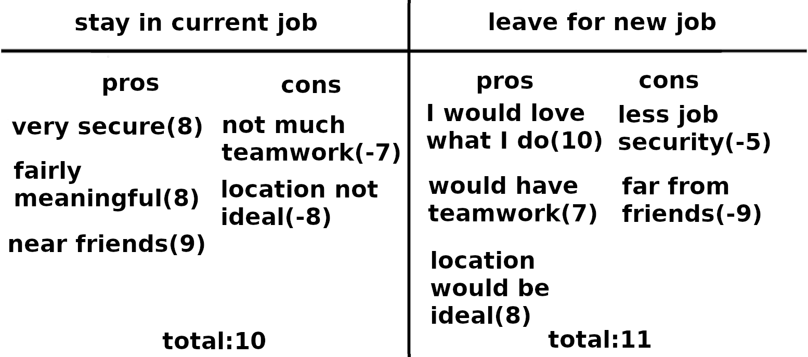

The linear model directs us to condense our decision down to the few most important things, but that can be difficult or not feasible; what then? One answer to that question is the weighted pro-con list.
It goes like this: For each possibility that you're considering, write down a list of good things that would happen (pros) and bad things (cons) underneath it. Now you've got an ordinary pro-con list.
The next step is, for each item you wrote as a pro, rate the goodness of that item on a scale from 0 (not good at all) to 10 (maximally good). Similarly, rate the cons, except this time use negative numbers, so something moderately bad would get, e.g., a -5.

Once all the pro-con items for an action under consideration have scores, you add them all up, both negative and positive; do that separately for each choice you're considering. An example is shown for the decision of "whether to leave my current job." The choice that ends up with the highest score is the one to choose, according to this model; in the example shown, the model says that you should leave your current job.
Just like with the linear model, you may find yourself unhappy with the final result; again, you will have learned something about how you feel. This would also be an excellent opportunity to understand your feelings better by figuring out why the pro-con model ended up giving the "wrong" result. Maybe the weights aren't quite right. Maybe you missed an important pro or con.
For example, suppose you are unhappy with the verdict that you should change jobs. In this case I would first apply the status quo bias test, designed to make sure that we aren't valuing our current situation too much just because we happen to already be in it. This test asks you to imagine yourself, as vividly as possible, already at the new job and then ask "If there were a button I could press that would make things go back to the way they are now, would I press it?" Your answer to this question can reveal what your preferences would be subtracting out the status quo bias. After that, if the problem is still not resolved, you might return to the pros, cons, and their weights.
So far we've been treating the consequences of our decisions as certain. For example, the pro-con list for the example pictured above assumes that "I would love what I do" would definitely happen if you took the new job. But what if we want to incorporate uncertainty into our thinking? Stay tuned!